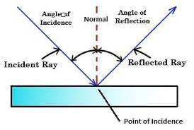
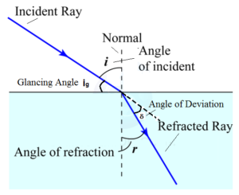
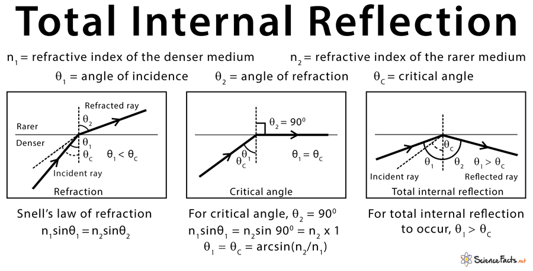
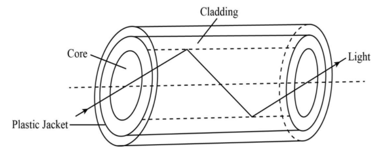

Optics and Laser
1.1 Light :
Light, or Visible Light, commonly refers to electromagnetic radiation that can be detected by the human eye. The entire electromagnetic spectrum is extremely broad, ranging from low energy radio waves with wavelengths that are measured in meters, to high energy gamma rays with wavelengths that are less than 1 x 10-11 meters. Electromagnetic radiation, as the name suggests, describes fluctuations of electric and magnetic fields, transporting energy at the Speed of Light (which is ~ 300,000 km/sec through a vacuum). Light can also be described in terms of a stream of photons, massless packets of energy, each travelling with wavelike properties at the speed of light. A photon is the smallest quantity (quantum) of energy which can be transported, and it was the realization that light travelled in discrete quanta that was the origin of Quantum Theory.
In this section we will learn about the basics of light propogations , some of its properties and its terms which will be required in in our main topic , which is Fiber Optics and Lasers
Reflection:
Reflection of light is the bouncing back of light rays after hitting a surface. This phenomenon allows us to see the world around us.The incident light ray that land on the surface is reflected off the surface. The ray that bounces back is called the reflected ray. If a perpendicular were drawn on a reflecting surface, it would be called normal. The figure below shows the reflection of an incident beam on a plane mirror.
Laws of Reflection:
- The incident ray, the reflected ray and the normal all lie in the same plane
- The angle of incidence = Angle of reflection
Refraction:
Refraction is the change in the direction of a wave passing from one medium to another.Refraction is the bending of a wave when it passes from one medium to another. The bending is caused due to the differences in density between the two substances.A light ray refracts whenever it travels at an angle into a medium of different refractive indices. This change in speed results in a change in direction
When light travels from a less dense substance to a denser substance, the refracted light bends more towards the normal line.
When light travels from a denser substance to a less dense substance, the refracted light bends away from the normal line.
Laws of Refraction:
- The incident ray refracted ray, and the normal to the interface of two media at the point of incidence all lie on the same plane.
- The ratio of the sine of the angle of incidence to the sine of the angle of refraction is constant. This is also known as Snell’s law of refraction.
Snell’s Law:
Snell’s law is defined as “The ratio of the sine of the angle of incidence to the sine of the angle of refraction is a constant, for the light of a given colour and for the given pair of media”. Equation of Snell’s Formula :
Refractive index:
The refractive index is a material property that describes how a material affects the speed of light traveling through it. It is the ratio of the velocity of a light ray in an empty space to the velocity of light in a substance. The refractive index is most commonly symbolized by the letter n or n'.
Total Internal Reflection:
Total internal reflection (TIR) is a physical phenomenon that occurs when a light ray is completely reflected back into the same medium after it strikes the surface of a rarer medium. TIR occurs when the angle of incidence is greater than a certain limiting angle, called the critical angle. For example, the critical angle for the water-air boundary is 48.6 degrees.
TIR occurs when a light traveling in a denser medium strikes the surface of a rarer medium. The light ray is then totally reflected back into the denser medium.
1.2 Fiber Optics :
What is Fiber Optics:
Fiber Optic cable is made up of thin fibers which are useful for the transmission of large amount of data. Infact the optical fiber is a hair thin cylindrical fiber of glass or any transparent dielectric medium. The fiber which are used for optical communication are wave guides made of transparent dielectrics. Its function is to guide visible and infrared light over long distances.
Fiber optic (or "optical fiber") refers to the medium and the technology associated with the transmission of information as lighsimpulses along a glass or plastic wire or fiber. Fiber optic wire carries much more information than conventional copper wire. Long distance communication lines are now fiber optic all over the world. Optical fibers use light to send information through the optical medium.
Structure of Fiber Optics:

Glass Core :
This is the central tube that transfers the data, this core is of very thin size and consists of optically transparent dielectric medium and carries the light form transmitter to receiver, The core diamneter can vary from about 5 micron to 100 micron
Glass Cladding :
This is outer optical material surrounding the core having reflecting index lower than the glass core. The glass cladding is also major component of fiber optic technology because it helps to keep the light within the core throughout the phenomena of total internal reflection
Plastic Buffer Coating :
Plastic coating that protects the fiber made of silicon rubber. The typical diameter of fiber after coating is 250-300 micrometer.
Outer Jacket :
Optical fiber cables come in number of cores that can start from single core to hundreds or thousands of cores. In order to handle these cores these are arranged in bundles in optical cables. These bundles are protected by the cable's outer covering which is known as fiber optic jacket. The outer jacket also protects the FO cores from weathering effect and also from heat and fire as per its application.
Propogation of Light in Fiber Optics:
In optical fibers, propagation of light takes place due to total internal reflection. When light falls one end of the optical fiber; it gets refracted into the fiber. The refracted ray of light falls on the interface separating the fiber and coating an angle which is greater than the critical angle. Thus the TIR can take place. The light travels the entire length of the fiber and arrives at other ends of the fiber without any loss in its intensity even if the fiber is rounded and curved.
Here the thin fiber of optical fiber is called core. The coating or surrounding layer of optical fiber is known as cladding. The refractive index of the typical core of the fiber is 1.458 and that of cladding 1.440. The sleeve containing a bundle of optical fibers is called a light pipe.
There are two limitations that an optical fiber has. The first one is the actual loss of light as it travels through the fiber and the other one is a maximum limit of the bandwidth of the signals that can be carried.
1.3 LASER:
Definition:
laser, a device that stimulates atoms or molecules to emit light at particular wavelengths and amplifies that light, typically producing a very narrow beam of radiation. The emission generally covers an extremely limited range of visible, infrared, or ultraviolet wavelengths. Many different types of lasers have been developed, with highly varied characteristics. Laser is an acronym for “light amplification by the stimulated emission of radiation.”

Absorption, Spontaneous Emission, Stimulated Emission:
- Absorption:
- Absorption is the process in which optical energy is converted to internal energy of electrons, atoms, or molecules. When a photon is absorbed, the energy may cause an electron in an atom to go from a lower to a higher energy level, thereby changing the internal momentum of the electron and the electron's internal quantum numbers.
- Spontaneous Emission:
- Spontaneous emission is an energy conversion process in which an excited electron or molecule decays to an available lower energy level and in the process gives off a photon. This process occurs naturally and does not involve interaction of other photons.
- Stimulated Emission:
- Stimulated emission is the process in which an excited electron or molecule interacts with a photon, decays to an available lower energy level, and in the process gives o a photon.